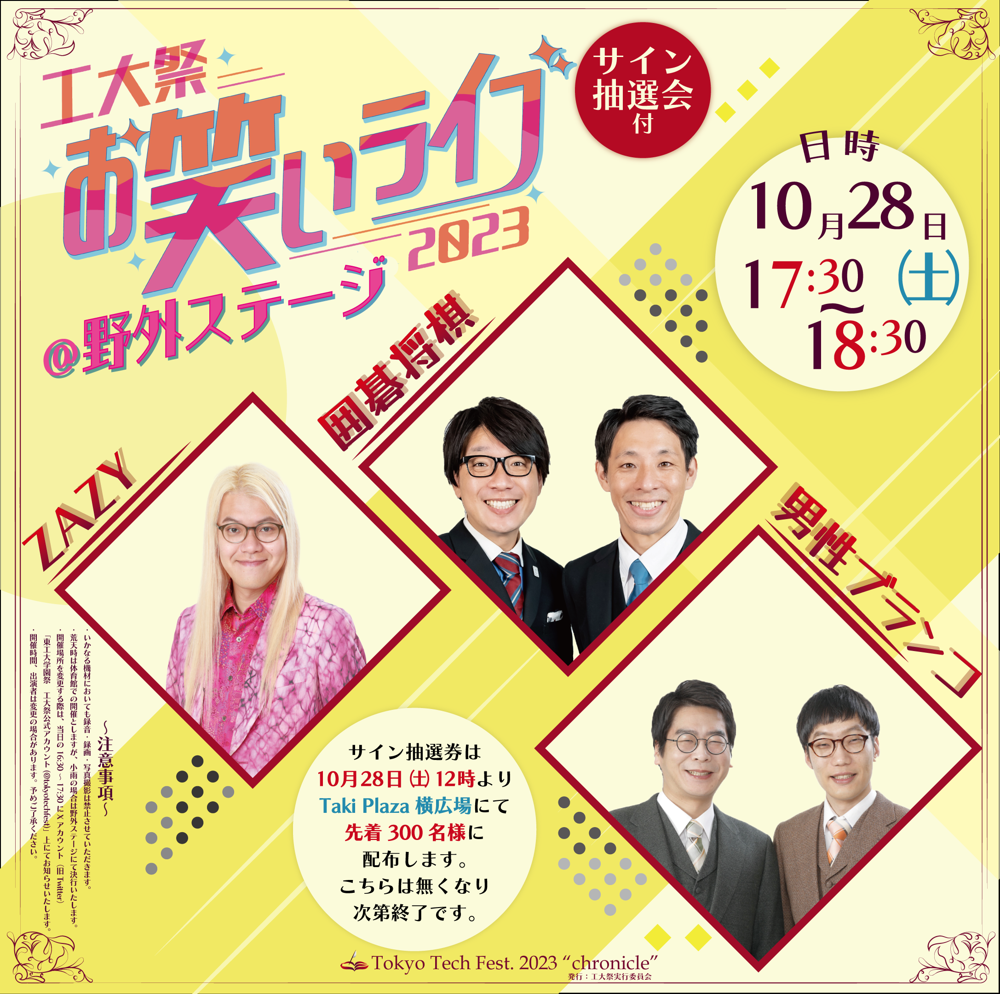

工大祭関連
-
工大祭2023 美術作品展作品募集バナー
作品の説明
こちらは工大祭2023で企画された美術作品展の作品募集の告知バナーとして制作されました。学内電子掲示板及び工大祭公式HPで掲載されました。
作品の詳細
- 使用ソフト： Adobe Illustrator
- 制作期間 ： 2023年7月
-
工大祭2023お笑いライブ看板
 作品の説明
こちらは工大祭2023お笑いライブの宣伝看板として制作されました。約1.8m四方の大型看板で工大祭当日には学内の中心部に掲示されました。
作品の詳細
- 使用ソフト： Adobe Illustrator、Adobe Photoshop
- 制作期間 ： 2023年8月~9月
-
工大祭2022お笑いライブビラ

作品の説明
こちらは工大祭2022お笑いライブの宣伝ビラとして制作されました。A4サイズで来場者にモノクロ版含め5,000枚配布されました。
作品の詳細
- 使用ソフト： Adobe Illustrator、Adobe Photoshop
- 制作期間 ： 2022年8月~9月